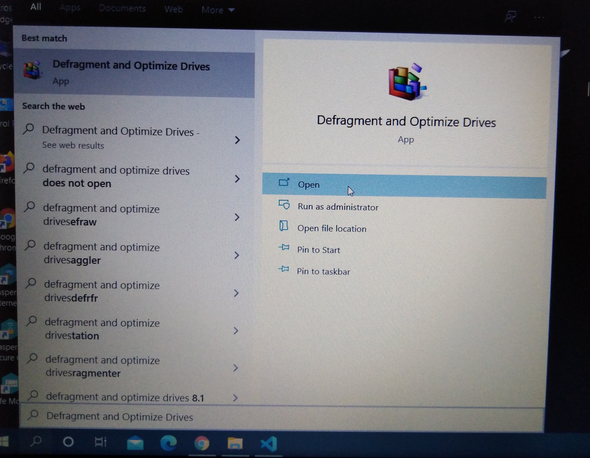

Updates are meant to be good things where they are expected to introduce improvements, new features, and bug fixes. However, Microsoft’s recent Windows 10 updates seem to be introducing more bugs than it fixes. In fact, the latest update for Windows 10 has revealed a new bug that could be slowly destroying your SSD.
How was the update damaging your SSD ?
The issue is that Windows 10 version 2004 would not properly record when the drive was optimized. As a result, the Drive Optimize tool would keep running after a restart, which means your SSD was being defragged far more than often than is necessary or healthy for your SSD.
Defragging, by nature, adds wear and tear to your SSD drive by writing and erasing, while not really improving performance as it would on a hard disk drive due to the non-sequential read capabilities of SSDs.
At a minimum, the repeated defrags are reducing the lifespan of your SSD; these are typically carried out once a month and many will argue that an SSD should never actually be defragged as it reduces the lifespan of the drive.
What you should do to protect your SSD ?
As we mentioned at the outset, Microsoft finally has an update coming that will address this problem, but for now, it is only available to Windows Insiders. Hopefully, it will reach the general public soon, but in the meantime, you can protect yourself by simply disabling automatic defragging.
Here's how to disable automatic defragging in Windows 10 :
-
Open Search box and type 'defragment and Optimize Drives' and open it.
 -
Then Click the Change settings button

-
Uncheck the box for "Run on a schedule" and click Ok to save.